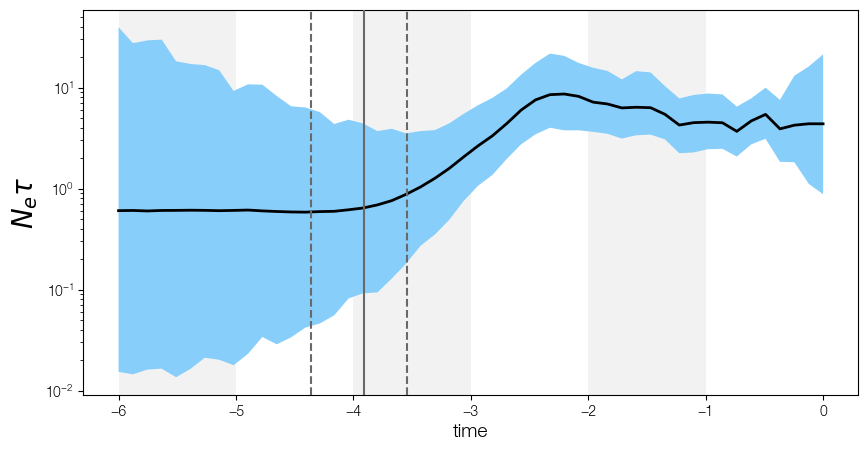

skygrid relative time#

Code#
import baltic as bt
from baltic import bt_utils
from baltic.bt_utils import calendar_to_decimal_date
from baltic import curonia
import matplotlib as mpl
from matplotlib import pyplot as plt
from matplotlib.gridspec import GridSpec
mpl.use("Agg")
fig = plt.figure(figsize=(10, 5), facecolor='w')
gs = GridSpec(1, 1)
ax = plt.subplot(gs[0])
curonia.plot_skygrid(ax=ax, logFile='camel_skygrid.combined.log', burnin=0)
relativeTimeline = range(-6, 0)
bt_utils.plot_time_grid(ax, relativeTimeline, edgeColour='none', alpha=0.05, zorder=0)
ax.set_ylabel(r'$N_{e}\tau$', size=20)
ax.set_xlabel('time', size=14)
plt.savefig('skygrid-relative-time.png', bbox_inches='tight')\n